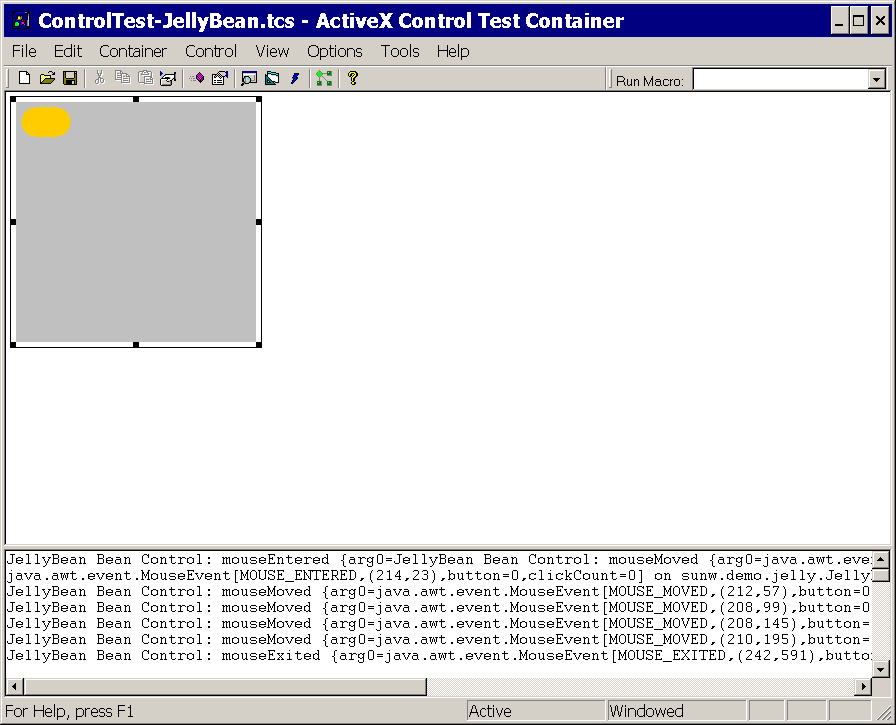

이 문서에서는, 다음의 토픽에 대해 설명합니다.
「어플리케이션의 예」 의 장에서는 2 개의 예가 되는 어플리케이션에 대해 설명합니다.
ActiveX 브릿지는, JavaBeans(TM) 컴퍼넌트 아키텍쳐(architecture) ( 「Bean」)에 근거하는 컴퍼넌트를, ActiveX 컨트롤로서 효율적으로 패키지 할 수가 있습니다. 그 때문에 ActiveX 컨트롤을 ActiveX 컨테이너내의 기능적인 컴퍼넌트로서 사용할 수 있습니다.
이 ActiveX 브릿지의 구현은, SDK/JRE 1.1 에서 1.3. 1 까지의 이전의 구현과는 호환성이 없는 것에 주의해 주세요. 이 새로운 브릿지를 사용하려면 , Bean 를 재패키지화할 필요가 있습니다.
개발 목적용으로, 이 구현은 다음의 OS 와 ActiveX 컨테이너를 지원합니다.
OS:Windows NT, 2000, XP
ActiveX 컨테이너 :Visual Studio 6.0 (SP3)
패키지화된 Bean 는, 상기의 플랫폼과 컨테이너 뿐만이 아니라, 모든 Windows 플랫폼과 ActiveX 컨테이너로 가동하는 것에 주의해 주세요.
설명 1. 1. 팍케이쟈 (
2. 2. 팍케이쟈를 실행하기 위해서는, 최초로 |
packager.exe 를 사용해, Bean 에 대한다 . dll 를 생성합니다.
packager.exe 의 사용 방법을 다음에 나타냅니다.
팍케이쟈의 사용 방법사용 방법: packager [-options] <jar file name> <bean name> |
. dll 에는, 1 개(살)만 패키지화된 Bean 를 포함할 수가 있다. 따라서, 각 Bean 에 대해서, 개별의. jar 파일이 필요. jar 파일이 다른 . jar 파일 또는 . class 파일에 의존하고 있는 경우는,CLASSPATH 의 설정이 필요<jar file name> 에는,. jar 파일에의 패스를 포함할 필요가 있다. 패스는 풀 패스 또는 상대 패스<bean name> 는,sunw.demo.jelly.JellyBean 와 같이, Bean 의 완전 지정된 패키지명일 필요가 있다-clsid 옵션이 사용되지 않는 경우, 패키지화된 Bean CLSID 가 랜덤에 생성된다. 이 -clsid 옵션에 의해, 매회 지정된 Bean 에 대한 같은 CLSID 를 지정할 수 있다-out 가 지정되지 않는 한,packager.exe 가 실행되는 같은 디렉토리에 . dll 를 생성한다. -out 파라미터를 지정하는 경우, 팍케이쟈는 . dll 파일을 지정한 디렉토리에 포함한다. 예를 들어,. dll 를 어플리케이션을 전개하는 <jre_home>\axbridge\bin 로 불리는 디렉토리에 포함할 수가 있다. <jre_home> 는, 공개 JRE 이며, 비공개는 아닌 것에 주의. Windows 에서의 공개 JRE 는, 일반적으로 C:\Program Files\Java\j2re1. 4.2 에 있다. SDK 와 관련하는 비공개 JRE 는, 일반적으로 C:\j2sdk1. 4.2\jre 에 있다-out 가 지정되지 않는 경우, 또는 -out 가 <jre_home>\axbridge\bin 를 지정하지 않는 경우,-reg 옵션은 사용할 수 없다예를 들어,<bean>.jar 가 jelly.jar 로,jelly.jar 는 C:\my_bean_jars 에 놓여져 있어, 완전 수식명은 sunw.demo.jelly.JellyBean, SDK는 j2sdk1. 4.2 로 상정합니다. 이 경우,packager.exe 를 다음의 방법으로 실행할 수 있습니다.
C:\j2sdk1. 4.2\bin\packager -clsid{D824B185-AE3C-11D6-ABF5-00B0D07B8581}-out C:\Program Files\Java\j2re1. 4.2\axbridge\bin -reg C:\my_bean_jars\jelly.jar sunw.demo.jelly.JellyBean
팍케이쟈는 다음에 나타내는 일을 실시합니다.
JellyBean.dll)을 사용한다 . dll 파일을 생성해,j2re\axbridge\bin 디렉토리에 들어갈 수 있다j2re1. 4.2\axbridge\lib 디렉토리를 작성해,jelly.jar 를 거기에 둔다CLSID D824B185-AE3C-11D6-ABF5-00B0D07B8581 를 사용해, Bean . dll 를 등록한다. dll 의 수동 등록상기와 같이,packager.exe 를 사용할 경우에 -reg 옵션을 사용하지 않는 경우,regsvr32.exe 를 사용해,. dll 를 수동으로 등록할 수 있습니다. . dll 파일이 놓여져 있는 디렉토리 (C:\Program Files\Java\j2re1. 4.2\axbridge\bin 등)에 cd 해, 다음을 입력합니다.
<path_regsvr32>\regsvr32 <bean name>.dll
Windows 2000 이 가동하고 있다고 합니다. Windows 2000 의 regsvr32.exe 는 C:\winnt\system32 에 있습니다. 이 경우에 JellyBean.dll 를 등록하려면 , 다음과 같이 합니다.
C:\Program Files\Java\j2re1. 4.2\axbridge\bin>C:\winnt\system32\regsvr32 JellyBean.dll
이것에 의해 이하를 합니다.
HKEY_CLASSES_ROOT 하에,JellyBean.dll 에 대한 CLSID 레지스트리 엔트리를 작성한다 j2re1. 4.2\axbridge\lib 디렉토리를 작성해,jelly.jar 를 거기에 둔다Bean 는 ActiveX 컨트롤로서 등록되었으므로, ActiveX 컨테이너에 삽입할 수가 있습니다. Visual Studio 부속의 ActiveX 컨트롤 테스트 컨테이너의 경우, 메인 메뉴로 「Edit」> 「Insert New Control...」에 진행되어, 「bean control」가 표시될 때까지 리스트를 아래에 스크롤 합니다. JellyBean.dll」컨트롤의 경우, 「JellyBean Bean Control」를 표시합니다. 다음에 Visual Studio 테스트 컨테이너에의 삽입을 표시합니다.

어플리케이션의 ActiveX 컨트롤로서 패키지화된 Bean 를 배치하려면 ,. dll 를 인스톨 프로세스의 일부로 하는 등록을 포함할 필요가 있습니다. . dll 는,<jre_home>axbridge\bin 디렉토리에 인스톨 되어regsvr32.exe 를 사용해 등록됩니다. 전술한 것처럼,. dll 가 등록되었을 때에, Bean . jar 는,<jre_home>\axbridge\lib 디렉토리에 포함됩니다.
Java 객체는,IDispatch 인터페이스를 지원하는 래퍼 객체를 개입시켜 액세스 할 수 있습니다. 즉, ActiveX 브릿지를 통해 간접적으로 액세스 됩니다. 예를 들어 Visual Basic (VB)로, 패키지화된 Bean 를 취급해, Java 객체를 Bean 메소드에 인수로서 건네주는 경우, (1) Bean 에 Java 객체의 요구되는 형태를 돌려주는 메소드가 있는 것, 또는 (2) Java 객체가 Bean 프로퍼티으로서 이용 가능하다라고 말하는 어느 쪽인지가 필요합니다.
예를 들어, 예의 장에 있는, 달력의 예,JCalendarPanel 를 고려해 주세요.
이 Bean 를 사용해 Java 를 직접 취급하는 경우,Date 객체를 작성해, 프로퍼티을 설정해, 다음에 JCalendarePanel 의 setSelectedDate() 에 대한 인수로서 건네줍니다. 이것을 ActiveX 브릿지를 사용해 실시하는 방법을 다음에 나타냅니다.
VB 로 작업하고 있으면(자) 가정해,JCalendarPanel1 로 불리는 JCalendarPanel 의 인스턴스가 있다고 합니다. VB 에서는 JCalendarPanel1. selectedDate 프로퍼티을 사용해 Date 객체를, 다음과 같이 해 얻을 수 있습니다.
Set dat = JCalendarPanel1.selectedDate
다음에 Date 객체 (dat)의 VB 메소드를 사용해 설정을 실시합니다. 예를 들어, 다음과 같이 합니다.
dat.setYear (1986 - 1900)
dat.setMonth (11 - 1)
dat.setDate 24
마지막으로,JCalendarPanel1 의 setSelectedDate 메소드를 사용해 date 를 설정합니다.
JCalendarPanel1.setSelectedDate dat
getMethodDescriptors() 를 개입시키는 BeanInfo 에 의해 제공되는 모든 메소드는, ActiveX 컨테이너로부터 액세스 가능합니다.
그러나, 메소드가 overload 되었을 경우, 가장 높은 수의 인수를 취하는 메소드만이 이용 가능합니다. 이것은 COM IDL 가 overload를 지원하지 않기 때문입니다. 그러나, 인수와 반환값의 형태는,VARIANT 가 됩니다. 각각의 인수는 옵션입니다. 어느 overload 한 메소드에 대해서도 Bean 문서를 참조해 인수와 형태의 정확한 값을 알 필요가 있습니다. MIDL 키워드와 같은 메소드 또는 프로퍼티명은, 모두 삭제됩니다.
모든 프로퍼티은,PropertyDescriptor 를 통해 BeanInfo 로 정의한 것과 같은 액세스권을 사용하는 브릿지를 통해 액세스 가능합니다. ActiveX 브릿지는 PropertyDescriptor 로 정의한 악 세사 메소드를 호출합니다.
Bean 프로퍼티이 bound 또는 constrained 의 경우,bindable 또는 requestedit 플래그가 COM 프로퍼티의 속성내로 설정됩니다. 컨테이너는 IPropertyNotifySink 인터페이스를 통해, 프로퍼티의 변경이 통지됩니다. 프로퍼티에 제한이 있어, 컨테이너가 프로퍼티의 변경을 거부했을 경우, Bean PropertyVetoException 가 브릿지에 의해 throw 됩니다.
원시형 및 캐릭터 라인, 폰트, 칼라 프로퍼티에 대해서는, Visual Basic 와 같은 ActiveX 컨테이너의 대부분은,PropertySheet 내에서 프로퍼티의 직접적인 조작을 할 수 있습니다. 다른 모든 프로퍼티, 예를 들어 배열이나 객체의 프로퍼티은 PropertySheet 에서는 액세스 할 수 없습니다만, 컨테이너에 관련하는 스크립트 언어를 통해 호출할 수가 있습니다.
브릿지는 4 개의 환경 프로퍼티을 지원합니다. 그것들은, Bean 컴퍼넌트가 그러한 프로퍼티을 구현하는 경우에, Bean 프로퍼티으로 번역됩니다. 이러한 환경 프로퍼티은, 컴퍼넌트가 초기화될 때 Bean 컴퍼넌트에 의해 읽히고 설정되어 환경 프로퍼티에 대한 변경의 통지를 합니다.
DISPID_BACKCOLOR
DISPID_FORECOLOR
DISPID_FONT
DISPID_ENABLED
브릿지는, ActiveX 컨테이너의 환경 프로퍼티의 변경을, 설정 프로퍼티을 통해 Bean 에 전송 합니다.
BeanInfo 에 의해 반환된 EventSetDescriptor 배열로 디폴트로서 선언된 모든 소스 인터페이스는, ActiveX 의 디폴트의 소스 인터페이스로서 선언된 1 개의 인터페이스에 짜넣어집니다. ActiveX 컨테이너에 의해 디폴트의 소스 인터페이스가 액세스 가능하다라고 하는 것이, ActiveX 의 최저한의 요건입니다.
EventSetDescriptor 의 getListenerMethodDescriptors API 에 의해 반환되는 각 메소드는, ActiveX 이벤트에 매핑 됩니다. 이벤트명은 메소드명입니다. Bean 의 모든 디폴트 인터페이스는 고유의 인터페이스에 머지 되므로, 같은 메소드명을 포함한 인터페이스는 허가되지 않습니다.
다음의 java.awt.event.ActionListener 소스 인터페이스에 대한 예를 생각합시다.
public interface ActionListener extends EventListener {
public void actionPerformed(ActionEvent e);
}
이 인터페이스 정의에 의해 생성되는 ActiveX 이벤트명은,actionPerformed 입니다. 예를 들어 Visual Basic 의 경우, 이벤트시그니챠는 다음과 같이 됩니다.
Private Sub Button_actionPerformed (ByVal evt As Object)
MsgBox evt.toString
End-Sub
컨테이너에 제공된 evt 는, 오토메이션 객체로,java.awt.AWTEvent Object 를 나타냅니다. 컨테이너는 AWTEvent 클래스에 의해 지원되는 메소드를 호출하는 것에 의해 이벤트의 정보에 액세스 할 수 있습니다.
ActiveX 컨트롤로서 패키지화되는 Bean 는 스탠드얼론의 어플리케이션의 일부입니다. 이 때문에, 애플릿의 샌드 박스 시큐리티 모델외에서 실행 가능합니다.
Internet Explorer 에서의 Bean 의 스크립트는 안전하지는 않습니다. AllPermission 액세스권이 부여되기 때문입니다.
Java Plug-in Control Panel 를 통해 JVM 를 구성할 수 있는 것에 주의해 주세요. 다음의 탭이 ActiveX 브릿지에 관련하고 있습니다.
Bean 를 디버그 하기 위해서 Java Console 를 사용할 수 있습니다.